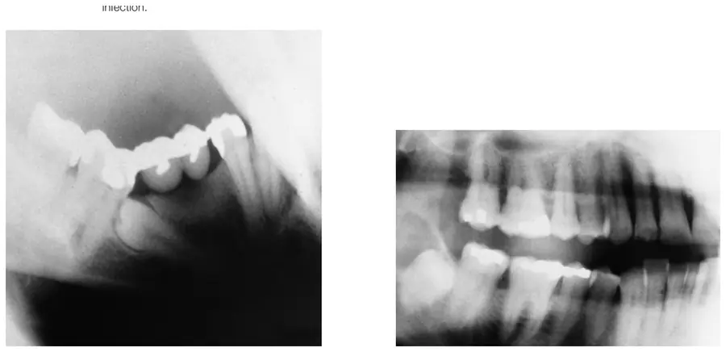
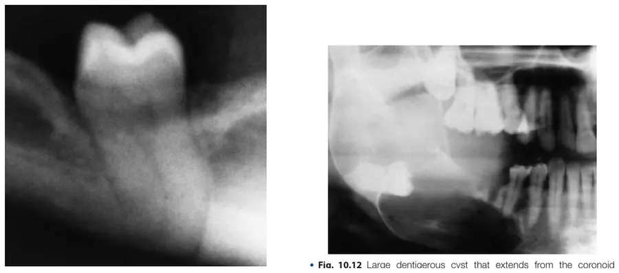

نسخه استخراجشده؛ ترجمه یا تأیید علمی انجام نشده است. وضعیت: captured
قاعدهی پایه: همهی دندانهای نهفته باید برداشته شوند مگر کنترااندیکاسیون مشخصی باقی گذاشتنشان را توجیه کند. وقتی فایدههای بالقوه بر عوارض و خطرات بالقوه بچربند، عمل باید انجام شود؛ و برعکس. کنترااندیکاسیونها عمدتاً به وضعیت جسمی بیمار مربوطند.

۱) سنین حدی. جوانهی مولر سوم از ۶ سالگی در رادیوگرافی دیده میشود. بعضی جراحان معتقدند برداشتن جوانه در ۷ تا ۹ سالگی با کمترین موربیدیتی جراحی ممکن است. ولی بیشتر جراحان معتقدند نمیشود با دقت پیشبینی کرد که مولر سوم در حال تشکیل نهفته خواهد شد یا نه. اجماع این است که برداشتن خیلی زودهنگام باید تا وقتی تشخیص دقیق نهفتگی ممکن شود به تعویق بیفتد.
شایعترین کنترااندیکاسیون برداشتن دندان نهفته، سن بالا است. با بالا رفتن سن، استخوان بهشدت کلسیفیه و در نتیجه کمانعطافتر میشود و کمتر زیر نیروی کشیدن خم میشود؛ نتیجه این است که باید استخوان بیشتری جراحی برداشته شود تا دندان از ساکتش بلند شود. و بیماران مسنتر پاسخ نامطلوبتر و پیامدهای پس از عمل بیشتری دارند: بیمار ۱۸ ساله ممکن است یک یا دو روز ناراحتی و تورم داشته باشد، در حالی که همان عمل در بیمار ۵۰ ساله میتواند ۴ یا ۵ روز دورهی بهبودی بدهد.
و قاعدهی سن بالا با یک شرط سهگانه: اگر دندانی سالها در زائدهی آلوئولار مانده بدون بیماری پریودنتال، بدون پوسیدگی و بدون دژنراسیون کیستیک، بعید است این پیامدهای نامطلوب رخ دهند. پس در بیمار مسنتر (معمولاً بالای ۳۵ سال) با دندان نهفتهای که هیچ نشانهی بیماری ندارد و لایهای از استخوان روی آن در رادیوگرافی قابل تشخیص است، دندان نباید برداشته شود. دندانپزشک باید هر ۱ یا ۲ سال دندان را رادیوگرافیک چک کند تا مطمئن شود پیامد نامطلوبی رخ نداده.
و چهار وضعیتی که همان دندان را باید برداشت: نشانهی تشکیل کیست، بیماری پریودنتال درگیرکنندهی دندان مجاور یا خود دندان نهفته، دندان نهفتهی منفرد زیر پروتز با استخوان نازک رویی، یا علامتدار شدن در نتیجهی عفونت.
۲) وضعیت پزشکی مخاطرهآمیز. اغلب با سن بالا همراه است. اگر دندان نهفته بدون علامت باشد، برداشتنش باید انتخابی تلقی شود. اگر عملکرد قلبی-عروقی یا تنفسی بیمار یا دفاع میزبانش در برابر عفونت بهطور جدی مختل باشد، یا بیمار کوآگولوپاتی اکتسابی یا مادرزادی جدی داشته باشد، جراح باید باقی گذاشتن دندان در زائدهی آلوئولار را در نظر بگیرد.
ولی اگر دندان علامتدار شود، جراح باید با پزشک معالج بیمار همکاری کند تا برداشتن با کمترین پیامد پزشکی حین و پس از عمل برنامهریزی شود.
۳) احتمال آسیب بیش از حد به ساختارهای مجاور. اگر دندان نهفته در ناحیهای باشد که برداشتنش اعصاب، دندانها یا بریجهای ساختهشدهی مجاور را بهطور جدی به خطر بیندازد، ممکن است باقی گذاشتنش عاقلانه باشد — و وقتی تصمیم به برداشتن گرفته نشد، دلایل باید در برابر عوارض احتمالی آینده سنجیده شوند.
و تفاوت تصمیم بر حسب سن: در بیمار جوانتر که ممکن است پیامدهای نهفتگی را متحمل شود، عاقلانه است دندان برداشته شود ولی با تمهیدات ویژه برای پیشگیری از آسیب به ساختارهای مجاور. ولی در بیمار مسنتر بدون نشانهی عارضهی قریبالوقوع و با احتمال پایین چنین عوارضی، دندان نهفته نباید برداشته شود.
مثال کلاسیک: بیمار مسنتر با نقص پریودنتال بالقوه شدید در سطح دیستال مولر دوم، که برداشتن مولر سوم در او تقریباً بهطور قطع به از دست رفتن مولر دوم میانجامد. در این وضعیت، دندان نهفته نباید برداشته شود.
نقطهی شروع روشن است: بیمارانی که یک یا چند علامت یا مشکل پاتولوژیک دارند، باید دندان نهفتهشان برداشته شود.

و یک الگوی مهم: بیشتر مشکلات پاتولوژیکِ علامتدارِ ناشی از مولر سوم نهفته، به دلیل دندانهای نیمهرویشیافته رخ میدهند و در نهفتگی کاملاً استخوانی کمتر شایعاند.
ولی سؤال سخت این است: با دندان نهفته پیش از بروز مشکل چه کنیم؟ پنج عامل تعیینکنندهاند:
و نتیجهگیری عملی: در ۱۸ یا ۱۹ سالگی، اگر تشخیص نبود فضای کافی برای رویش عملکردی گذاشته شود، مولر سوم بدون علامت را میتوان برداشت و سلامت پریودنتال بلندمدت مولر دوم بهینه خواهد شد. در همین سن، اگر برداشتن جراحی انتخاب شود، التیام بافت نرم و بافت استخوانی در حداکثر سطح خود رخ میدهد.